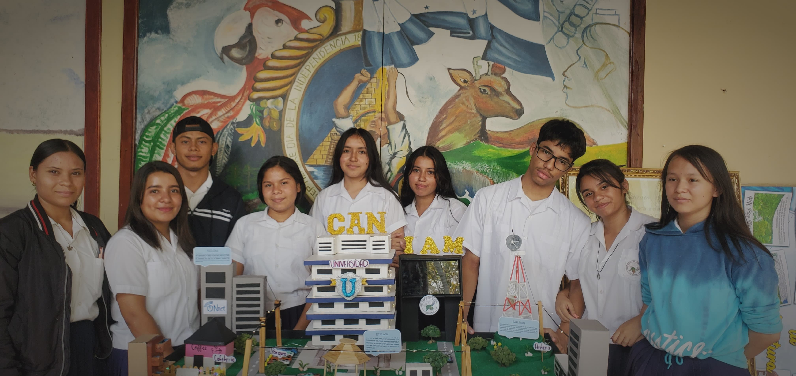

Instituto Armando Martínez
Misión y Visión
Misión, Instituto Armando Martínez, es una Institución educativa del nivel medio pionero, responsable de formar jóvenes en el área, Ciclo común de Cultura Bachilleres en Ciencias y Letras, Administración de Empresas y Técnicos en Computación. Ofreciendo una educación de calidad, en un clima de respeto, disciplina y compañerismo, con el fin de lograr en los estudiantes valores éticos, morales, espirituales actitudes positivas, capacidad de análisis, educación actitud y critica y competencias, para que puedan adaptarse a la época de cambios que exige la sociedad.
Visión Para el 2026 El Instituto Armando Martínez espera contar con un edificio propio con todas las condiciones necesarias para brindar una educación de calidad implementando el taller industrial, laboratorio Ciencias Naturales, Computación siendo una Institución con tecnología incorporada, con el personal dinámico, unido, creativo y con disposición para el trabajo, de donde egresan alumnos líderes, con una excelencia de calidad educativa, que permite enfrentar los restos que la sociedad demanda.
Quiénes Somos
Somos una institución educativa a nivel medio,responsable de formar jóvenes en el área de Ciclo Común, Bachillerato en Ciencias y Humanidades, Técnicos Profesionales en Administración de Empresas, Finanzas e Informática.

Ubicación
Nos Puedes Encontrar en Nuetras Redes Sociales